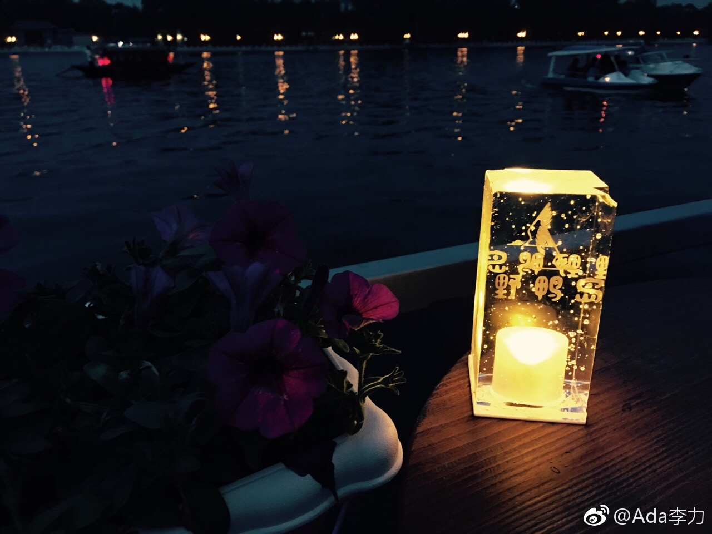

#姣姣#很好奇我跟柔柔妈妈聊了什么，说：“给我讲讲呗？”，我一时还没法概括都聊了什么。姣姣又问：“为什么你跟柔柔妈妈那么好？”。我说：“妈妈之前有一段特别艰难的时候，柔柔妈妈来探望和安慰过，你和爸爸倒没有”。@Ada李力:周末下午本来想在家看书，柔柔妈妈打电话来约去后海转转，就是俩女人的约会和聊天。只是犹豫一下下，立刻同意，收拾出发。下午四点出门，晚上11点半到家，走了1万八千步。有多少年没有这种娱乐活动了，真的很好。 北京·什刹海公园 